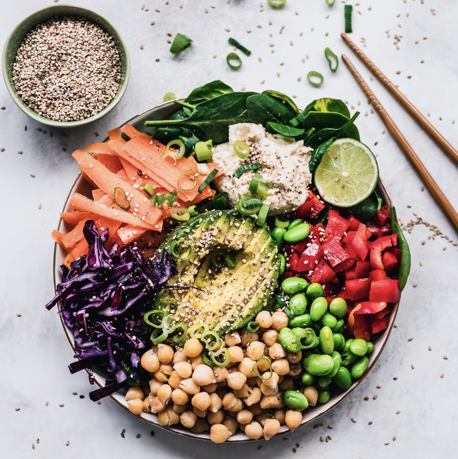
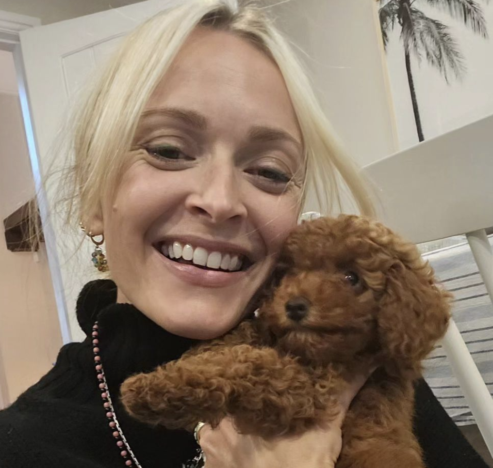
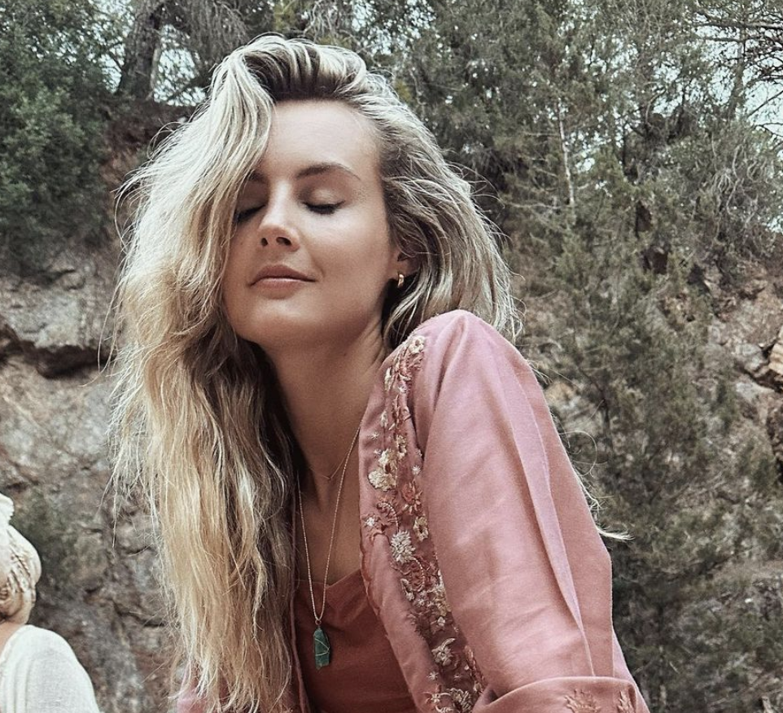
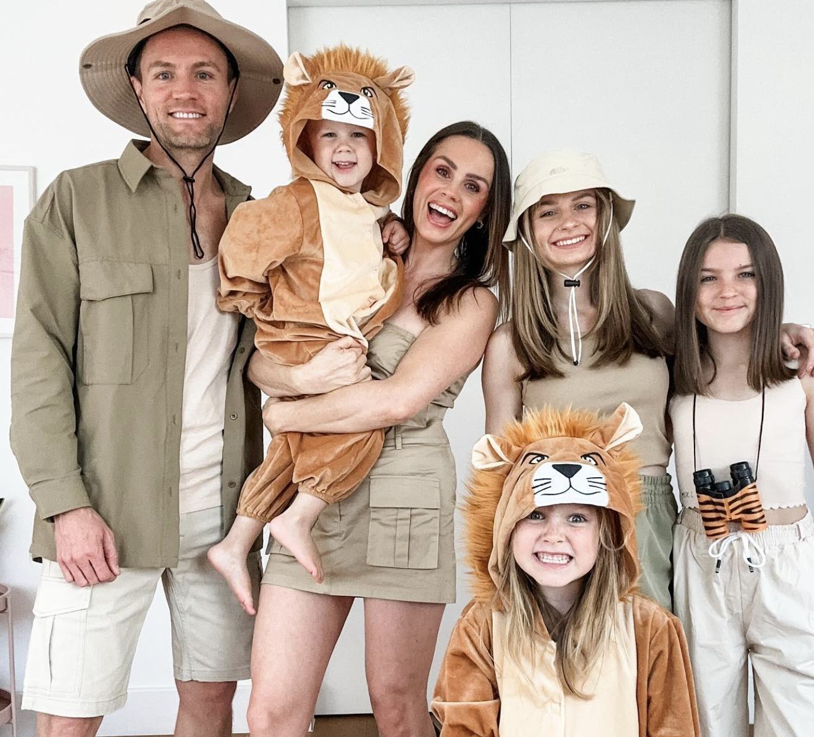
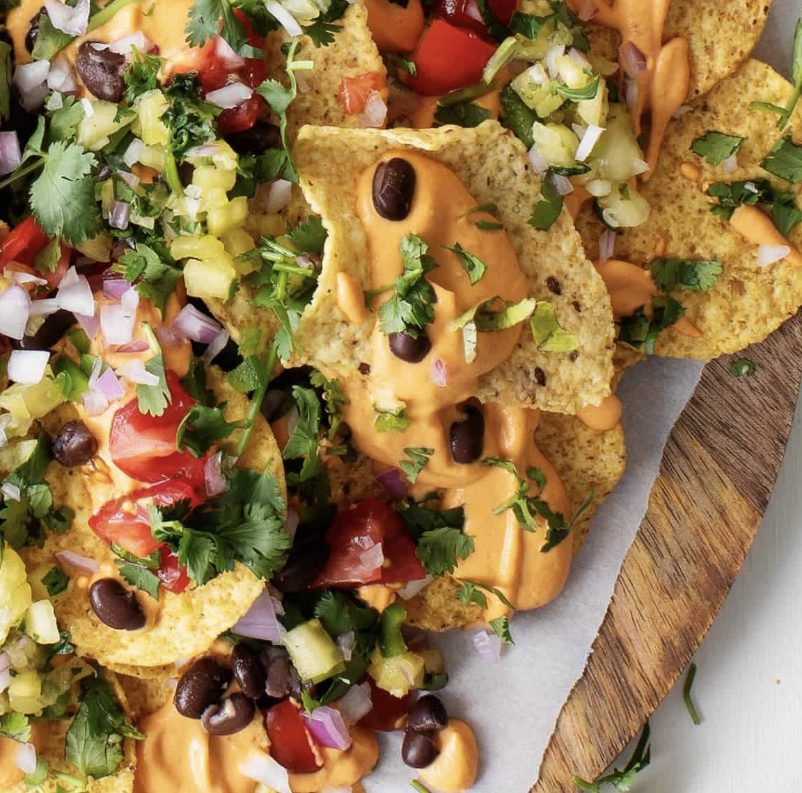
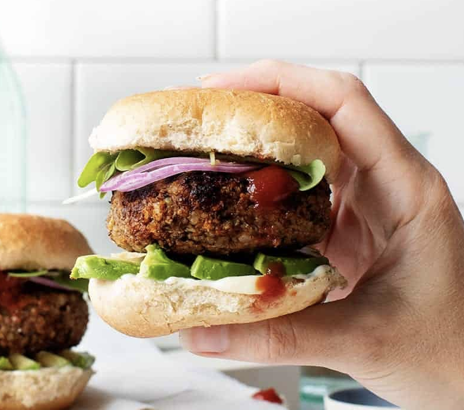
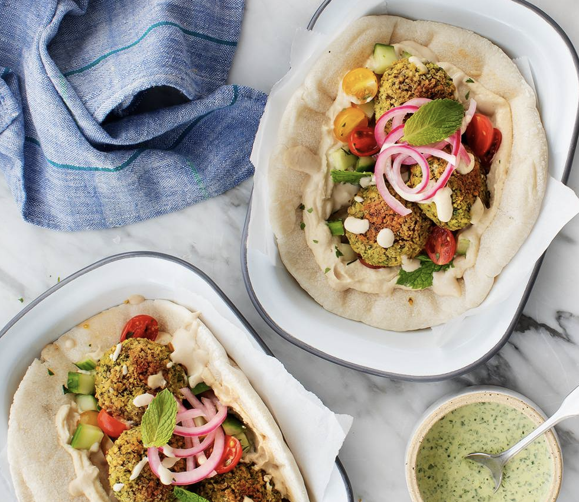
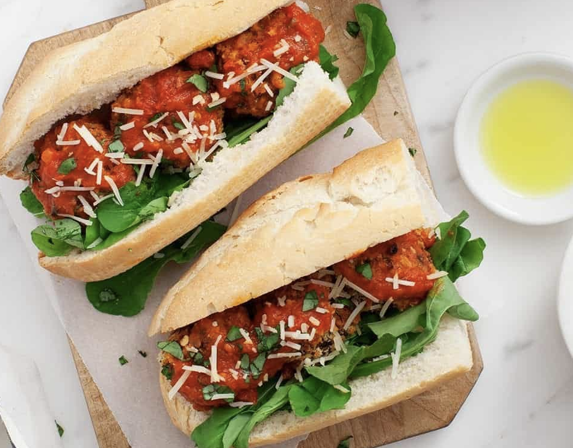

Veganism

Veganism is a compassionate and sustainable lifestyle that embraces a plant-based diet and a deep commitment to animal welfare and environmental preservation. It goes beyond what's on your plate, extending to all aspects of life. By abstaining from animal products like meat, dairy, and eggs, vegans not only enjoy a wide array of delicious and nutritious plant-based foods but also make a profound impact on the world. With a focus on kindness, ethics, and responsibility, veganism stands as a powerful movement that seeks to reduce animal suffering, combat climate change, and promote a healthier, more harmonious planet for all living creatures. It's a journey toward a brighter, more compassionate future, where choices align with a vision of sustainability and ethical consciousness.



FearneCotton is a devoted mother, broadcaster, and writier dedicating to spreading positivity.

Vegan Fajitas
Vegan Burgers
Vegan Falafel
Vegan Meatballs